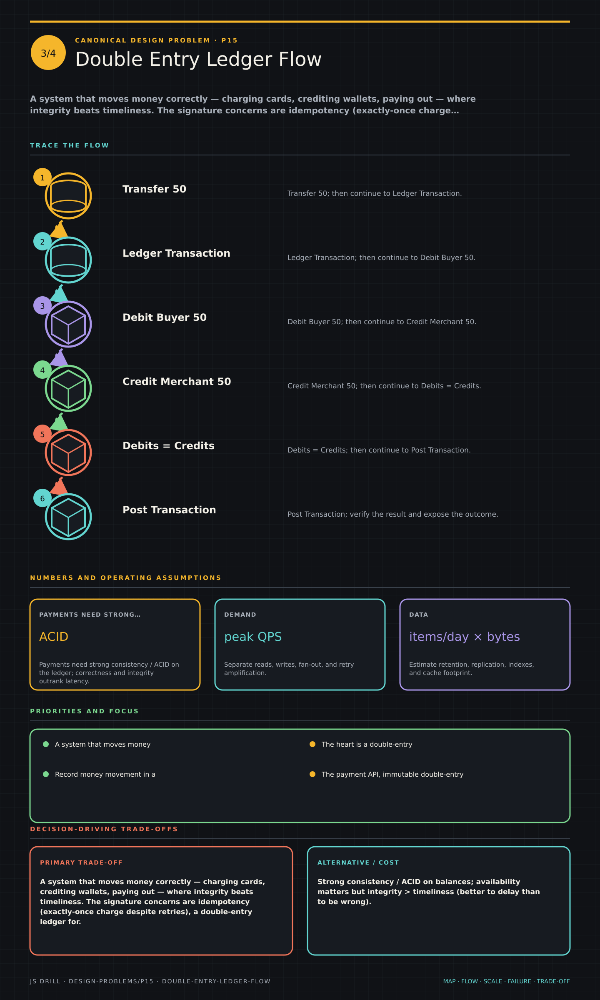

https://frosty110.github.io/js-drill/assets/system-design/infographics/design-problems/p15/double-entry-ledger-flow.pngA system that moves money correctly — charging cards, crediting wallets, paying out — where integrity beats timeliness. The signature concerns are idempotency (exactly-once charge despite retries), a double-entry ledger for auditable correctness, and orchestrating an external gateway with.
A system that moves money correctly — charging cards, crediting wallets, paying out — where integrity beats timeliness. The signature concerns are idempotency (exactly-once charge despite retries), a double-entry ledger for auditable correctness, and orchestrating an external gateway with saga/compensation while staying PCI-compliant.
All questions, model answers and diagrams for Design a Payment System (Wallet / Ledger) →